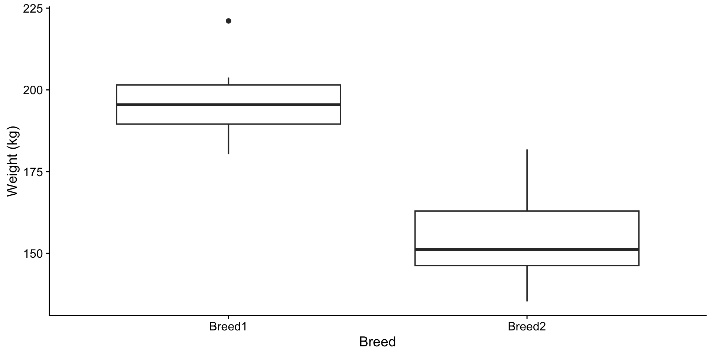
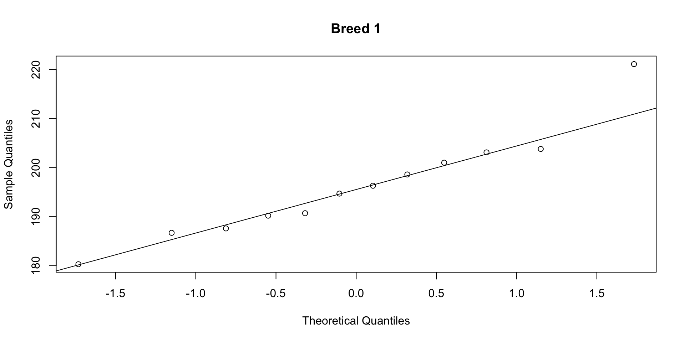
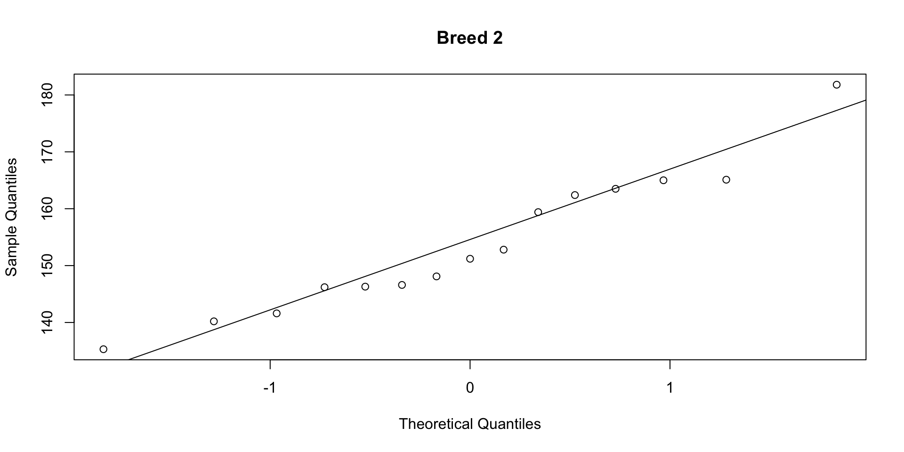

ENVX2001 Applied Statistical Methods
Mar 2026
Last week we learned about confidence intervals, which estimate the uncertainty of a parameter (e.g. a mean).
The \(t\)-test and the confidence interval are closely related. Both are derived from the same quantities, and this week we look at that connection more carefully.
Two breeds of cattle, 12 and 15 samples. Are the breeds different in mean weight?

The boxplot suggests a difference. To test, you would run t.test() and check the p-value. What is the test actually computing?
In the last lecture, we constructed confidence intervals for a single mean. The same principle extends to the difference between two means.
t.test() gives you both
Two Sample t-test
data: weight by breed
t = 9.4624, df = 25, p-value = 9.663e-10
alternative hypothesis: true difference in means between group Breed1 and group Breed2 is not equal to 0
95 percent confidence interval:
33.23011 51.71989
sample estimates:
mean in group Breed1 mean in group Breed2
196.175 153.700 The output reports two quantities:
These always agree. If the CI excludes zero, the p-value is below 0.05, and vice versa. The \(t\)-statistic measures how far the observed difference is from zero, relative to its standard error.
In the last lecture, we built a 95% CI for a single mean:
\[\bar{y} \pm t^* \times SE\]
For the difference between two means, the same structure applies:
\[(\bar{y}_1 - \bar{y}_2) \pm t^* \times SE(\bar{y}_1 - \bar{y}_2)\]
If this interval excludes zero, the groups differ significantly.
We can rearrange the CI formula to isolate a single number that captures both the difference and the variability:
\[t = \frac{\bar{y}_1 - \bar{y}_2}{SE(\bar{y}_1 - \bar{y}_2)}\]
The \(t\)-statistic counts how many standard errors the observed difference is from zero.
For the cattle data: \(t = 42.5 / 4.5 = 9.46\). The observed difference is over nine standard errors from zero.
We have a \(t\)-statistic. The p-value answers: if there were truly no difference between the breeds, how often would we see a value of \(|t|\) this large or larger?
The 95% CI and the p-value always agree. If the 95% CI excludes zero, the p-value is below 0.05, and vice versa.
Model equation: \(y_{ij} = \mu_i + \varepsilon_{ij}\)
Each observation is the group mean plus random error. The hypothesis asks whether \(\mu_1\) and \(\mu_2\) are equal.
The \(t\)-test assumes both groups have similar variability. If they do not, then the test is unreliable because the pooled estimate of variance will not represent either group well.
# A tibble: 2 × 4
breed n mean_wt sd_wt
<fct> <int> <dbl> <dbl>
1 Breed1 12 196. 10.6
2 Breed2 15 154. 12.3[1] 1.158756The \(t\)-test assumes the data in each group follow a normal distribution. With small samples, departures from normality (strong skew, heavy tails, outliers) can distort the p-value and confidence interval. Check each group separately.
Shapiro-Wilk normality test
data: cattle$weight[cattle$breed == "Breed1"]
W = 0.94084, p-value = 0.5091
Shapiro-Wilk normality test
data: cattle$weight[cattle$breed == "Breed2"]
W = 0.94636, p-value = 0.4691

If points fall close to the line, the data are approximately normal. Both groups pass the Shapiro-Wilk test (\(p > 0.05\)) and the QQ plots show no strong departures.
Observations should not influence each other. This is a property of the study design, not something we test statistically.
Two Sample t-test
data: weight by breed
t = 9.4624, df = 25, p-value = 9.663e-10
alternative hypothesis: true difference in means between group Breed1 and group Breed2 is not equal to 0
95 percent confidence interval:
33.23011 51.71989
sample estimates:
mean in group Breed1 mean in group Breed2
196.175 153.700 var.equal = TRUE performs the pooled (Student’s) \(t\)-test, which assumes equal variancesA p-value of 0.03 does not mean there is a 3% chance the null hypothesis is true. It means: if there were truly no difference, we would observe a result this extreme about 3% of the time.
Notice the five steps we just followed:
We will use this framework throughout the semester, starting with ANOVA in the next lecture.
var.equal = FALSE)In Lab 03, you will practise this workflow with t.test() and diagnostic plots.
Next: what if we have more than two groups? We need ANOVA.
This presentation is based on the SOLES Quarto reveal.js template and is licensed under a Creative Commons Attribution 4.0 International License.